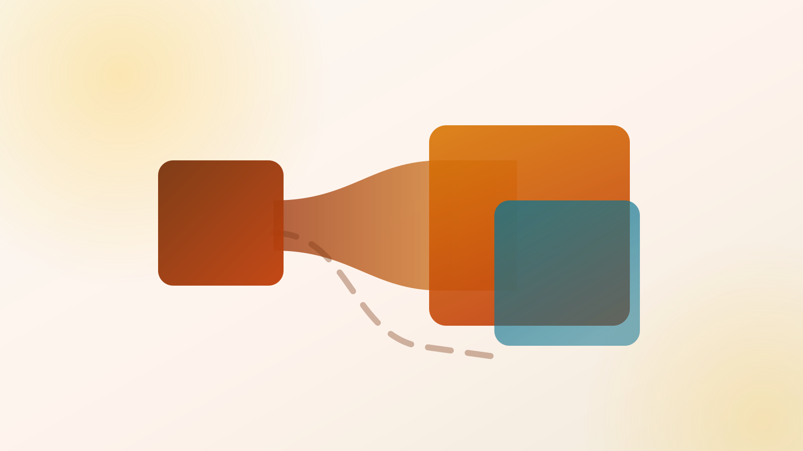

Where does the token actually live?
Four React kits, one Tailwind 4 monorepo. Every colour on this sheet is a real CSS custom property, declared once and printed next to its own chip. The difference between the kits is not what the colour is — it is how many files have to agree on it.
Only shadcn/ui and
Base UI make the Tailwind
@theme block the source of truth for brand tokens — everything else is
downstream of a JS object. Since shadcn/ui switched its default primitive to Base UI in
July 2026 [1],
the two are the same substrate with a different amount of pre-written CSS.
Mantine is the strongest batteries-included
option that still emits real CSS variables — but the token names are Mantine's, not yours.
Material UI
bends furthest to a brand and hardest against Tailwind 4: its tokens are born in JS and only
reach CSS variables through a hand-maintained bridge file
[2].
The brand ramp, printed from live custom properties
10 shades · oklch()
Tailwind 4 has no JS config. A theme variable declared with @theme
is simultaneously a CSS custom property and a generated utility class —
--color-itenium-600 mints bg-itenium-600, text-itenium-600,
border-itenium-600. A plain :root { --brand: … } gets you the variable and
no utility [3].
Ten shades is also exactly what Mantine demands —
hand it nine and you get a TypeScript error
[12].
Declared in @theme — utility minted
/* libs/itenium-tokens/theme.css */
@theme {
--color-itenium-600: oklch(0.626 0.190 39);
}
/* anywhere in any app: */
<button class="bg-itenium-600">Save</button>
<div style="color: var(--color-itenium-600)">
Declared in :root — variable only
/* the same colour, one directive different */
:root {
--color-itenium-600: oklch(0.626 0.190 39);
}
/* variable resolves. utility does not exist. */
<button class="bg-itenium-600">Save</button> ← no-op
<div style="color: var(--color-itenium-600)"> ← fine
shadcn's semantic pairs — the tokens are the product
background / foreground
Every surface token ships with its own contrast partner: --primary +
--primary-foreground, --card, --muted,
--destructive, --border, --ring, plus
--sidebar-* and --chart-1..5. Declared in oklch() under
:root, re-declared under .dark, exposed to Tailwind through
@theme inline [4].
A single --radius base derives sm / md / lg / xl through calc().
Adding a brand token is three lines and you get bg-warning for free.
The swatches below are those exact declarations, live.
--primary-foreground: oklch(0.985 0 0);
--card-foreground: oklch(0.145 0 0);
--muted-foreground: oklch(0.556 0 0);
--radius: 0.625rem;
The whole theming model, in full
:root {
--primary: oklch(0.626 0.190 39);
--primary-foreground: oklch(0.985 0 0);
}
.dark {
--primary: oklch(0.687 0.176 44);
--primary-foreground: oklch(0.205 0 0);
}
@theme inline {
--color-primary: var(--primary);
--color-primary-foreground: var(--primary-foreground);
}
/* → bg-primary, text-primary-foreground */
Brand distribution is a first-class item type
/* registry-item.json — a private itenium registry */
{
"name": "itenium-brand",
"type": "registry:theme",
"cssVars": {
"theme": { "--radius": "0.5rem" },
"light": { "--primary": "oklch(0.626 0.190 39)" },
"dark": { "--primary": "oklch(0.687 0.176 44)" }
},
"css": { "@layer base": { } }
}
/* one brand = one CSS file, shipped to N apps */
⚠ The escape hatch is also the tax: you own the component source, so a shadcn
upgrade is a diff against files you have edited
[1].
Note also that shadcn now separates styles from themes — "Rhea" (May 2026) is a denser
style that adjusts component sizes and gaps directly rather than moving Tailwind's
--spacing multiplier, explicitly so that p-2 keeps meaning the same thing
app-wide [11]. That is the
right instinct to copy for a corporate density mode.
The pipeline, and the place it doubles
Style Dictionary → component
The DTCG Format Module is JSON with
$value / $type / $description, .tokens.json files and
{group.token} aliases — still a draft carrying an explicit
do-not-implement banner as of June 2026
[18] — but tooling converged anyway:
Style Dictionary ⭐ 4.7k
v4 has first-class DTCG support
[19] and ships both a
css/variables and a javascript/es6 output
[20].
Every kit here is technically feedable. The difference is how many files must agree.
PATH A · shadcn/ui + Base UI
1 HOP · SINGLE DEFINITIONbrand.tokens.json
css/variables
@theme { --color-itenium-600 }
bg-itenium-600
var(--color-itenium-600)
The CSS variable is the token is the utility
[3]. The brand theme is a plain CSS
file any Nx app @imports — no JS package, no provider, no bundler coupling.
PATH B · Material UI
3 HOPS · DEFINED TWICEbrand.tokens.json
javascript/es6
createTheme({ palette })
--mui-palette-primary-main
@theme inline { --color-primary }
bg-primary
The --mui-* variables are an output, not an input. Tailwind cannot see
them until you hand-write the bridge, and the token names are MUI's taxonomy
(palette.primary.main), not yours and not DTCG's.
PATH C · Mantine
2 HOPS · RENAMED, NOT DOUBLEDbrand.tokens.json
colorsTuple() / generateColors()
createTheme({ colors })
--mantine-color-itenium-6
@theme { --color-itenium-600 }
Mantine emits a broad, genuinely well-named CSS-variable surface —
--mantine-color-{name}-{0..9}, --mantine-spacing-*,
--mantine-radius-*, --mantine-shadow-*, z-index layers
[6].
The variables are real; the names are Mantine's. To get bg-itenium-600 you
re-declare inside @theme anyway.
PATH D · Base UI
0 HOPS · NOTHING TO BENDbrand.tokens.json
@theme { … }
className={…}
className (string or a function of component state), state
data-attributes ([data-checked], [data-open]), a
style prop, and a handful of layout variables like
--available-height / --anchor-width on Popover
[5].
No theme object, no dark mode, no colour token. Brand reach is unlimited because there is
nothing to bend — and zero help.
The bridge file · MUI's Tailwind 4 integration, hand-maintained
/* You also have to fix the cascade or Emotion outranks every utility */
@layer theme, base, mui, components, utilities;
@theme inline {
--color-primary: var(--mui-palette-primary-main);
--color-secondary: var(--mui-palette-secondary-main);
--color-error: var(--mui-palette-error-main);
/* …and every other palette, typography and shadow token, by hand */
}
// theme.ts — the same palette, a second time, in a second language
createTheme({ cssVariables: true, palette: { primary: { main: '#c2410c' } } })
Three distinct fights, all sourced from MUI's own integration doc
[2]:
tokens born in JS cannot mint utilities without the bridge; enableCssLayer: true plus an
explicit layer order is mandatory or Tailwind utilities lose to Emotion's runtime styles; and the
default dark mode desyncs — see Sheet 04.
Three mechanisms. One of them silently disagrees with Tailwind.
live demo · no JavaScript on this page
Tailwind 4's dark: variant is class-based by default
[15]. shadcn keys off the same
.dark class [4]. Mantine keys off
data-mantine-color-scheme on <html>
[16]. Material UI, out of the box,
keys off prefers-color-scheme
[7].
The three surfaces below are wired to those three selectors — really wired, in this page's stylesheet.
.dark class on <html>. In a real app your toggle sets it.
On this page nothing sets it, so this surface stays light.
MantineProvider (client) or
ColorSchemeScript (SSR), persisted in localStorage under
mantine-color-scheme [16].
prefers-color-scheme while Tailwind keys off
.dark. A user who toggles your app to dark gets Tailwind-styled surfaces flipping and
MUI-styled surfaces not. That is the split you are looking at above.
Fix: createTheme({ cssVariables: { colorSchemeSelector: 'class' } })
[7].
Mantine's equivalent chore is teaching Tailwind about the data attribute:
@custom-variant dark (&:where([data-mantine-color-scheme=dark], …))
[15].
| Kit | Mechanism | Default | SSR flash prevention | Tailwind dark: interop |
|---|---|---|---|---|
| shadcn/ui | .dark class on <html> |
class | Your job — an inline pre-hydration script | ✓ native — Tailwind's default dark variant is class-based |
| Base UI | None — you implement it | — | Your job | ✓ by construction |
| Mantine | data-mantine-color-scheme |
data-attribute | ✓ ColorSchemeScript runs pre-hydration; Mantine names the failure mode FART — flash of inaccurate color scheme — and documents it [17] |
⚠ needs @custom-variant dark |
| Material UI | colorSchemeSelector: media | class | data | .theme-%s |
prefers-color-scheme |
✓ InitColorSchemeScript + suppressHydrationWarning |
✗ on the default media mode — a Tailwind class toggle and MUI's media query desynchronise |
How far each kit bends before it fights back
overrides · multi-brand · typesshadcn/ui ⭐ 119k
tokens are the product
Semantic pairs in oklch(), exposed through @theme inline. Brand distribution is a registry:theme item carrying cssVars plus raw css [10] — precisely the itenium-ui shape: a private registry publishing the Itenium token set to N apps.
- Global
- Edit the component file — it's in your repo
- Instance
className- Escape
- Total — rewrite the file. ⚠ upgrades become diffs
- Brands
- Brand = a CSS file; runtime switch = a class swap
- Types
- ✗ none — tokens are CSS strings
Best fit. No fight — it is the Tailwind 4 token model.
Base UI ⭐ 10.3k
no tokens · no theme · no opinion
1.0 shipped 11 Dec 2025 — 35 accessible unstyled components, a maintenance commitment, and a rename to @base-ui/react [8]. Multi-brand is "whatever your CSS does". Typed theme augmentation is not a concept.
- Global
- Your own CSS
- Instance
className(string or state-fn),style,data-*- Escape
- Total — the
renderprop swaps the element - Brands
- Unlimited, and zero help
- Types
- ✗ none
No fight — also no help. shadcn = Base UI + a token layer you own.
Mantine ⭐ 31.4k
JS theme · CSS-variable output
The deepest brand hook in any of the four is theme.variantColorResolver — a function returning { background, hover, color, border } that governs how every colour-aware component renders each variant, and can define entirely new ones [13]. Genuinely more expressive than per-component styleOverrides for the "our brand has a weird tertiary button" problem.
- Global
theme.components.X·variantColorResolver- Instance
classNames,styles,variant,color- Escape
- High — but you're inside Mantine's naming
- Brands
- Multiple themes +
virtualColor; provider re-render to swap - Types
- ✓ one
mantine.d.ts— concise, good autocomplete [24]
⚠ One fight, two chores: fix the cascade layer order [25], re-declare the variables in @theme.
Material UI ⭐ 98.6k
deepest bend · heaviest coupling
Three override layers in createTheme: defaultProps, slot-keyed styleOverrides, and a props-conditional variants array — ownerState callbacks are now discouraged in its favour [14]. Pigment CSS is paused and v8 is still "drafting and shaping" [9], so 2026's model is v7 plus a CSS-variables mode, not a rewrite.
- Global
components.MuiX.{defaultProps, styleOverrides, variants}- Instance
sx,slotProps,slots- Escape
- Very high —
slotsreplaces the element; ⚠ every layer is Emotion CSS you must out-specify - Brands
- ⚠ Nested providers + manual deep-merge [21]; theme scoping exists mainly for coexisting with a second styling lib and the docs warn against it [22]; open friction on
colorSchemespalettes [23] - Types
- ✓ best in class —
declare moduleper palette / variant [14]
✗ Three fights. Permanently double-maintained tokens and a cascade you keep renegotiating.
--color-brnd is a silent no-op in Tailwind, whereas theme.colors.brnd
is a compile error. This is where MUI and Mantine genuinely beat the CSS-variable kits.
Mitigation for a CSS-first stack: generate a .d.ts of allowed token names from the same
.tokens.json Style Dictionary build
[20], and lint
class names.
Specification summary
the one question, answered four ways| Kit | Token source of truth | Emits CSS custom props? | Mints Tailwind utilities from brand tokens? | Bridge needed | Hops |
|---|---|---|---|---|---|
| shadcn/ui ⭐ 119k | Your CSS file — :root + @theme inline [4] |
✓ native | ✓ | none | 1 |
| Base UI ⭐ 10.3k | Your CSS file — the kit has no theme at all [5] | ✓ yours | ✓ | none | 1 |
| Mantine ⭐ 31.4k | JS theme object → resolver → CSS vars [6] |
✓ --mantine-* |
✗ must re-declare in @theme |
thin, one-way | 2 — and colours must be re-shaped into 10-tuples [12] |
| Material UI ⭐ 98.6k | JS createTheme object → CSS vars when cssVariables: true [7] |
✓ --mui-*, opt-in |
✗ must re-declare in @theme |
thick, hand-maintained [2] | 3 — the bridge is a second, manual mapping |
Brand tokens should be a CSS file. An @theme block in a
libs/itenium-tokens package, generated by Style Dictionary from
.tokens.json [19][3].
Every consuming app @imports it — no provider, no JS coupling. For an Nx library
publishing a design system, that is a materially simpler artifact than an exported
Theme object.
shadcn/ui on Base UI gives one primitive layer, tokens in the currency the build
already speaks, and a registry mechanism designed for exactly the "ship a branded component set to
N apps" job [10].
Mantine is the fallback if the team wants a theme object and 120 components out of
the box and will accept duplicating the token names plus a layer-order fix
[25].
MUI buys the deepest override surface and the best TypeScript story, at the price of a
permanently double-maintained token definition.
Five other angles on the same decision
Which React UI component kit should itenium-ui adopt in 2026?Styling engine and Tailwind 4 interop: which kit survives the cascade
Tailwind 4 puts every utility inside a cascade layer, so any kit that ships unlayered CSS silently outranks it.
surveyThe 2026 maturity and governance baseline
The four kits are not the same category: two libraries, a code registry, and a set of primitives.
surveyAdmin-console component coverage: the gap list
Only Mantine covers a CRUD console in-box with a single gap — the data grid. MUI's grid features are paywalled.
surveyA11y & primitive foundations: what each kit inherits
The real choice is which primitive foundation you inherit — and none of the four publishes a VPAT.
reconNx 21 build ergonomics for a shared itenium-ui library
shadcn's copy-in model works in a shared Nx library — if you own the plumbing.